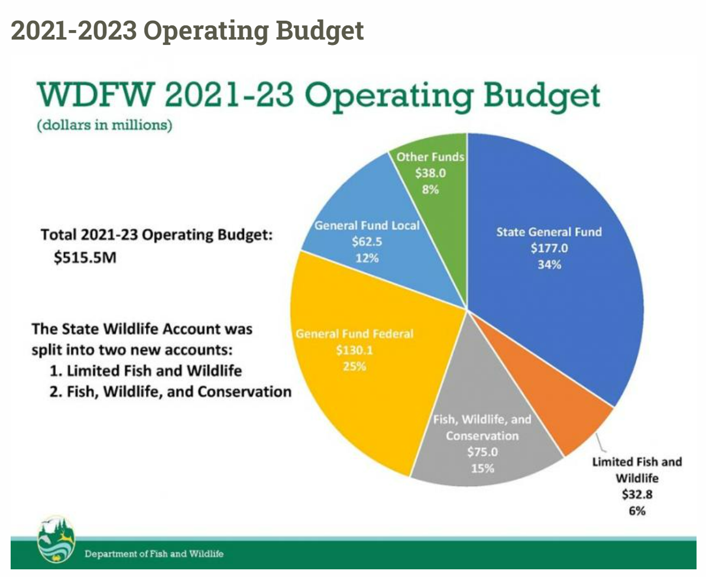
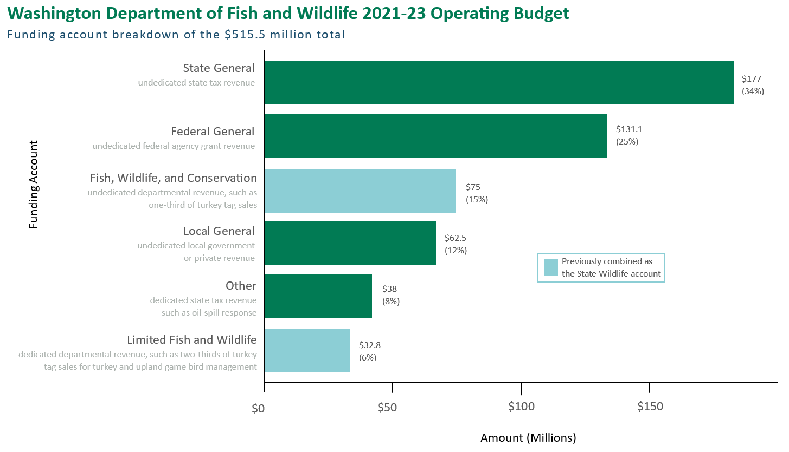

Data Visualization Critique
Introduction
The data visualization that I chose to critique is the Washington Department of Fish and Wildlife’s 2021-23 budget chart. I found this chart on the WDFW’s operating budget page of their website.

What is the story?
I think the story of this visualization is “here is the proportion of each budget category for the Washington Department of Fish and Wildlife operating budget of 2021-23, note that the State Wildlife account is now split into the Limited Fish and Wildlife account and Fish, Wildlife and Conservation account.”
How effective is the visualization?
I think the visualization is effective but it could be better. The viewer can see that the graph is a budget and broken into different categories. It is clear that the budget is for a 2021-23 operating budget. I like how there is both the dollar amount and budget percentage listed. The amounts are rounded so the viewer does not need to count zeros. The budget categories are labelled and visualization is titled. The categories are mostly different colors and not a color gradient.
Is the visualization misleading?
I don’t think the visualization is misleading, but it is difficult to see the difference between similar values in a pie chart. For example, the Other Funds account is $38M and the Limited Fish and Wildlife account is $32.8M but they look the same size to me.
How well does the visualization hold up visualization principles?
The visualization holds up visualization principles okay, and could be better. Proximity is present in some ways but not in others. For example, the budget category labels are close to or on the pie chart slices, but, the department name is not spelled out in the title and the viewer has to look at the bottom of the graph to know what entity the operating budget is for. Similarity is present in the text formatting. The notes and budget categories use a mostly consistent style to signal to the user that this is a note versus a budget category. I don’t really see an opportunity for enclosure, closure, or continuity to be present in this visualization. Connection is present in the Limited Fish and Wildlife label where a line is used to tie the text to the its corresponding slice because the slice is too small. The large size of the pie chart captures the viewer’s focus, and text is used to convey to the viewer that the State Wildlife account was split. The de-clutter principle is less present - there is a lot of text and some is redundant. And I don’t think the audience was highly considered with the graph creation as it is not clear what each budget category means.
How could the visualization be improved?
The visualization could be improved in several ways. First, update from a pie chart to a bar chart so budget category sizes are clearer. Second, add category definitions. This is a visualization shared with the public and there is not enough context to actually understand what the categories mean. Third, reduce redundancy to de-clutter - for example “2021-23 operating budget” is listed twice. Fourth, spell out WDFW so the viewer does not need to assume or check the bottom to see what entity the operating budget is for. Fifth, reduce text or replace with visualization features to simplify - currently it is text heavy with notes.
Why does my version improve the visualization?
I created an improved version of the visualization using Microsoft Word. I think my visualization improves the original in several ways. First I changed the visualization from a pie chart to a bar graph. Pie charts can work sometimes, but when there is more than five categories or some of the categories are really close, it is hard to differentiate. The pie chart provides a good “part of a whole” sense, but I think the bar chart does a better job at allowing the viewer to compare sizes. I kept in both the amount and percentage for reference. I also organized the bars with the largest funding account at the top and smallest funding account at the bottom so the viewer does not need to jump around to organize in their own mind. Funding amount, percentages, labels, and definition are placed as close to the bar as possible so the viewer does not need to jump around to understand that as well. I reduced duplicate and redundant text to simplify, however, there is actually more text in my version. I felt it was important to keep the audience in mind and provide short definitions of each budget category to inform the viewer. I tried to be as succinct as possible with the definitions and avoid clutter. I used size and color to help organize the text for the viewer, so even though it is more text heavy, I think it is easier to read. I used color and and annotation to highlight that the Fish, Wildlife, and Conservation account and Limited Fish and Wildlife account used to be a part of the same State Wildlife account. I tried to use colors that are part of the Washington Department of Fish and Wildlife website palette for continuity.
